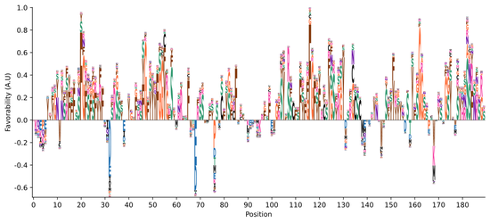

Biological Hypothesis Discovery

How do we discover new biology using neural networks? Even as we’ve trained models that can sensitively detect biological signal, we still need a way to extract and organize these signals into actionable hypotheses. For example, what phenotypes did we miss because they are too rare, or only occur in certain conditions? How do phenotypes correlate with disease or molecular functions? Is a biological phenotype really a group of multiple subclasses informed by different underlying mechanisms? To address these challenges, I focus on two main strategies in my research: visualization and interpretation.
Visualization: Unsupervised cluster analyses can help group together representations learned by neural networks, so we can analyze patterns and global trends. We analyzed the entire yeast proteome in 24 different screens - integrating over 600,000 different images. We found a lot of cool patterns in the ways different proteins responded, that were unexpected - for example, in addition to finding specific and general responses to stress, we also found proteins that would behave in really different ways in different stresses, or unexpected changes in proteins that were thought to do one thing, but had a change that implied that they were functional in different ways. These analysis help us come up with new biological hypotheses, highlighting biology that biologists wouldn’t have previously noticed without these types of big, systematic analyses.
Interpretation methods: In our work understanding the intrinsically disordered “dark proteome", we developed a method allowing us to interpret individual neurons of a neural network as sequence logos (showing the subsequences these neurons preferentially identified in protein sequences), as well as a method that allowed us to interpret what specific properties of any given sequence a neural network was relying on to identify evolutionary conservation in that sequence. We showed that we could identify things like new subclasses of motifs impacting the proteome on a global level, as well as specific hypotheses about functional elements in individual sequences.